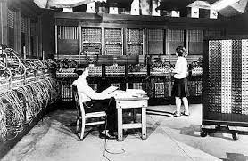

1. Komputer Generasi Pertama (1940-1956)
Perangkat komputer yang pertama ternyata dikembangkan untuk desain pesawat dan peluru kendali. Digagas oleh Konrad Zuse, seorang insinyur asal jerman, komputer generasi pertama menggunakan tabung hampa udara sebagai sirkuit dan drum magnetik untuk memori.
Komputer generasi pertama ini sangat mahal dan besar, hingga mengisi seluruh ruangan. ENIAC komputer elektronik pertama di dunia mempunyai bobot 30 ton, panjang 30 M, dan tinggi 2,4 M. Komputer generasi pertama mengandalkan machine language, level bahasa pemrograman paling rendah yang dimengerti komputer. Bahasa pemrograman ini hanya bisa menyelesaikan satu perhitungan setiap waktu serta butuh berhari-hari atau berminggu-minggu untuk menyetel perhitungan baru.
